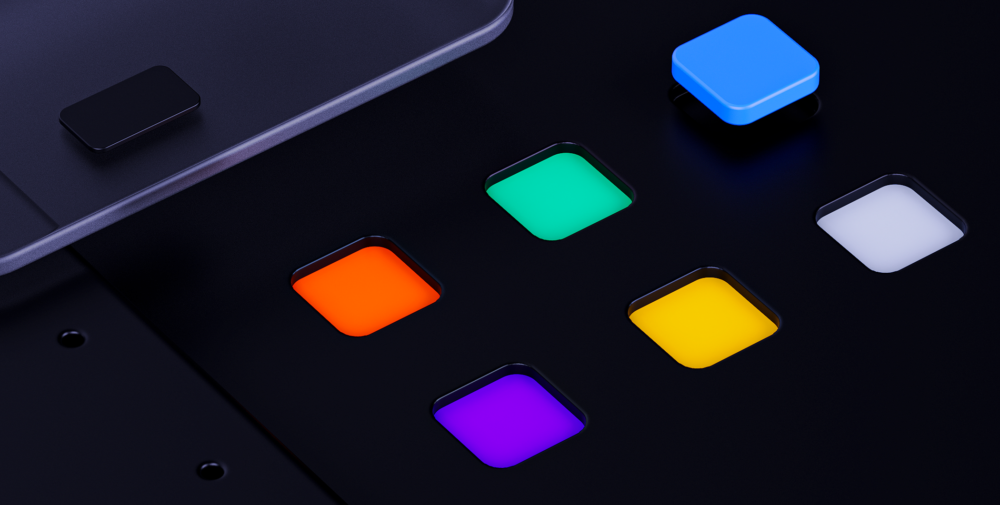

Colors
El color es el lenguaje visual de Mustache. Cada tono tiene un propósito: comunicar identidad de marca, jerarquía, estados de feedback y accesibilidad.

Introducción
Los colores se organizan en dos capas: Primitivos (escalas tonales crudas) y Semánticos (tokens por rol y uso). Sobre esa base, cada equipo de producto tiene un tema propio dentro de Semánticos, garantizando que todos usen exactamente los mismos nombres de token apuntando a su propia paleta de marca.
Capa 1 · Primitivos
Los primitivos son las escalas tonales que alimentan todo el sistema. Cada color parte de un valor base validado, del cual se genera un rango completo de sombras y tintes, dando a cada matiz una escala predecible y consistente.
Los primitivos nunca se usan directamente en diseño: existen como fuente de verdad que los tokens semánticos referencian. Actualizar un primitivo se propaga automáticamente a todos los tokens y componentes que lo usan.
Capa 2 · Semánticos y temas
Los tokens semánticos le dan propósito al color. En lugar de referenciar un valor crudo, los componentes usan tokens como Ink.Strong o Background.disabled: nombres que describen el rol, no el color en sí.
Semánticos también impulsa el sistema de temas multi-producto. Cada equipo en Rappi tiene un tema dentro de la librería; todos usan exactamente los mismos nombres de token, pero los mapean a una paleta de primitivos diferente. Así un componente funciona en todos los productos sin ninguna modificación.
Cómo se nombra un token, los 13 temas y qué productos tienen dark mode: Tokens y temas →
Semantics
Listado 1:1 de la librería semantics en Figma: cada token, su uso y el primitivo al que apunta hoy. Se diseña y se nombra con el token de la izquierda, nunca con el valor de la derecha.
Accesibilidad
Todas las combinaciones de color en Mustache se validan contra WCAG 2.2 nivel AA. Cuando una combinación no alcanza el ratio de contraste requerido, ajustamos solo la luminosidad (preservando tono y saturación) para encontrar el valor más cercano que cumpla la norma. Ver la ficha completa en Accessibility.
| Estado | Estable |
| Temas | Light & Dark · Multi-producto |
| Diseñadores | Core |